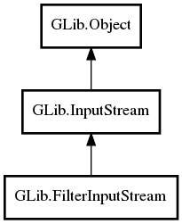

GLib.FilterInputStream Reference Manual
Packages
gio-2.0
GLib
FilterInputStream
base_stream
close_base_stream
FilterInputStream
get_base_stream
get_close_base_stream
set_close_base_stream
FilterInputStream
Object Hierarchy:

Description:
public
abstract
class
FilterInputStream
:
InputStream
All known sub-classes:
BufferedInputStream
ConverterInputStream
DataInputStream
MultipartInputStream
Namespace:
GLib
Package:
gio-2.0
Content:
Properties:
public
InputStream
base_stream
{
construct
set
;
get
; }
public
bool
close_base_stream
{
construct
set
;
get
; }
Creation methods:
protected
FilterInputStream
()
Methods:
public
weak
InputStream
get_base_stream
()
public
bool
get_close_base_stream
()
public
void
set_close_base_stream
(
bool
close_base)